Nie posiadając akademickiego wykształcenia artystycznego, Mieczysław Nepomucki opanował trudną i wymagającą fizycznie technikę obróbki metalu. Korzystając w tajemnicy z podręczników do chemii oraz metalurgii, tworzył unikalne reliefy, kute formy oraz kompozycje dekoracyjne.
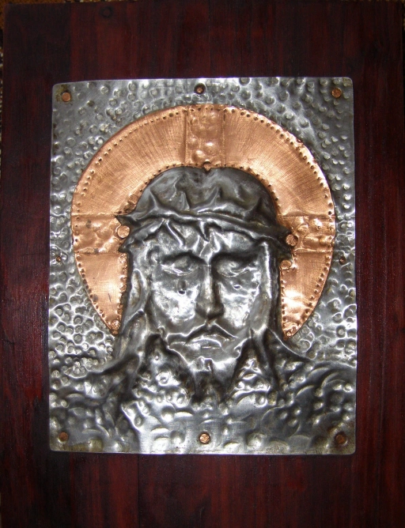
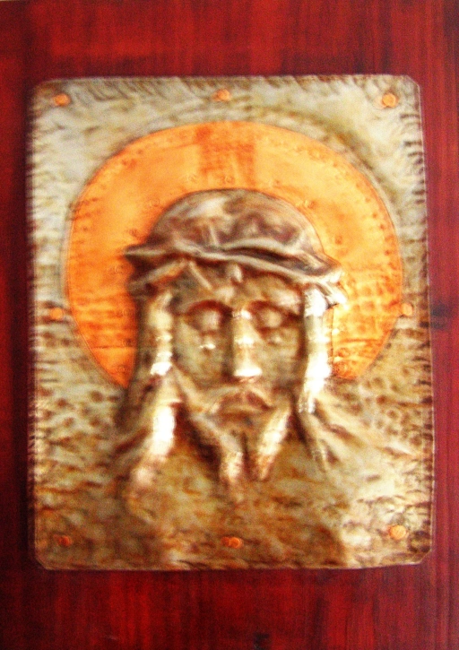
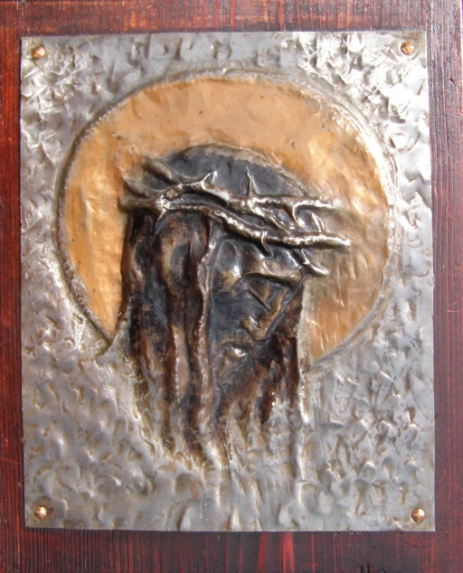
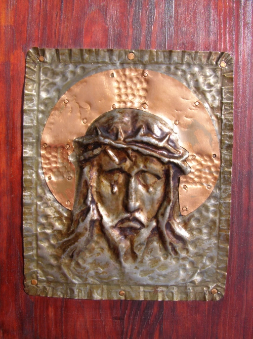
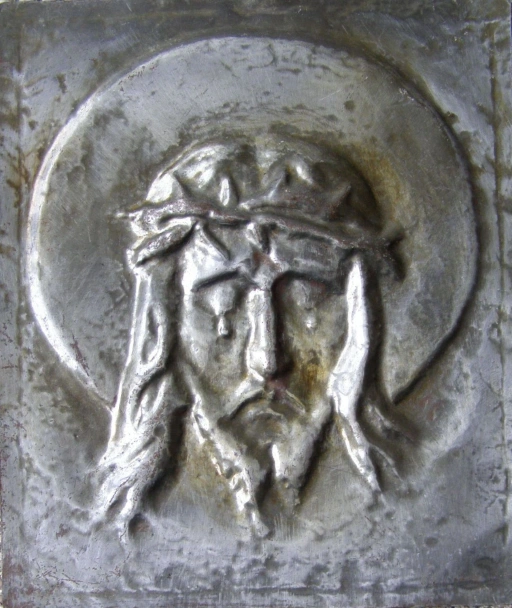
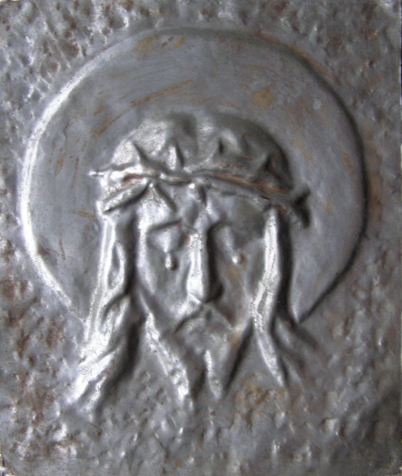
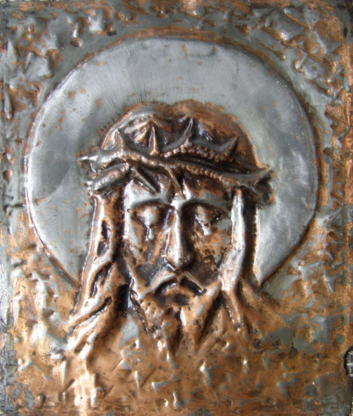
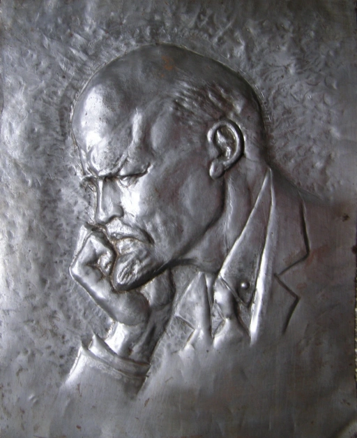
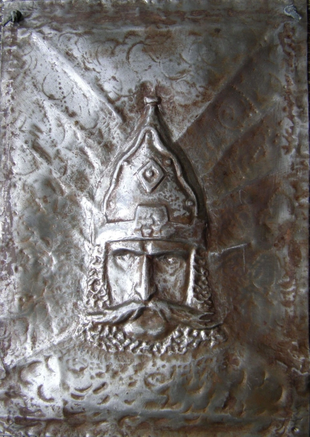
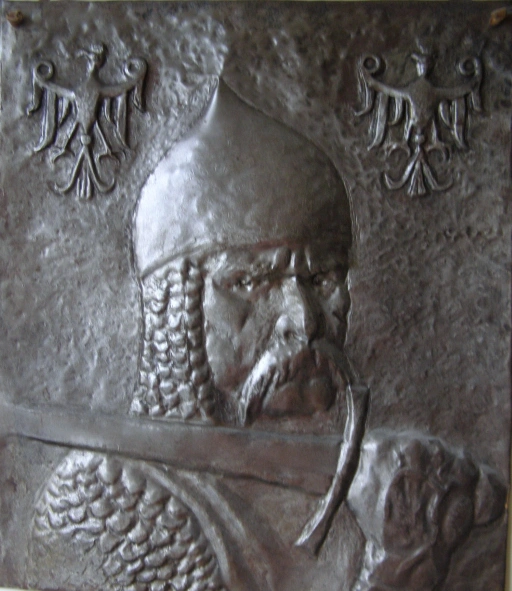

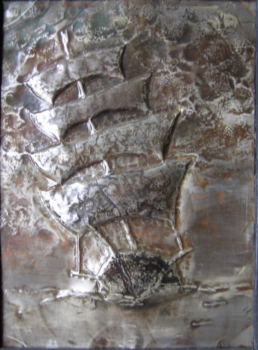
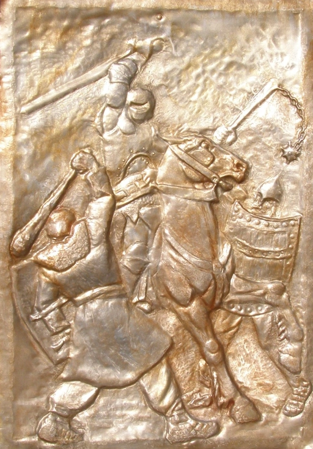
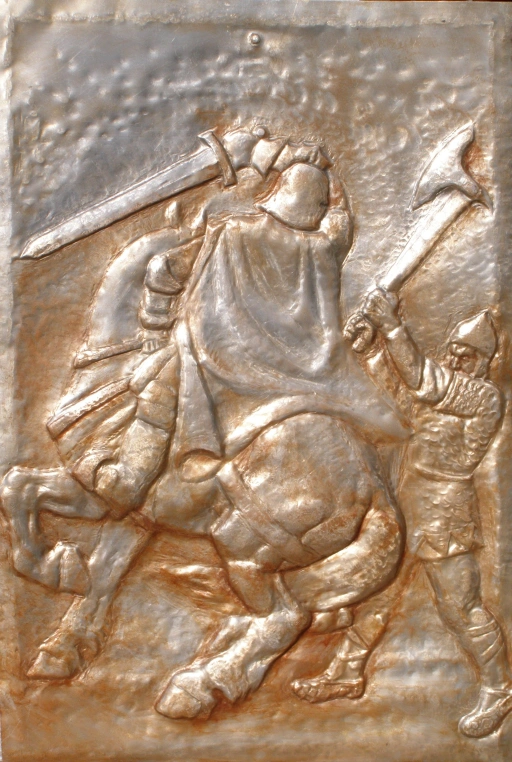